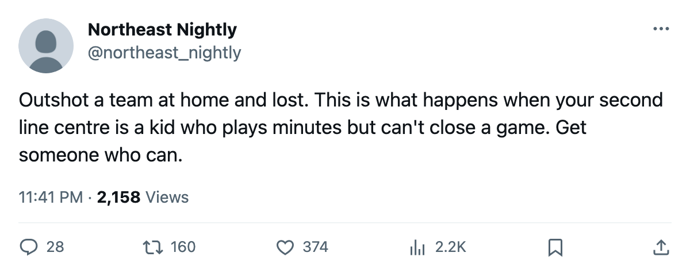

Leafs 1, Hurricanes 2: 19 shots, one goal, and a former Leaf visits Thursday
Toronto outshot Carolina at home and dropped one for the first time since February 15. Florida arrives on 2005-03-03 without Joe Nieuwendyk.
 Sam OkaforLeafs beat reporter · Queen City Telegram
Sam OkaforLeafs beat reporter · Queen City TelegramThe piece
The  Toronto Maple Leafs dropped a home game to the
Toronto Maple Leafs dropped a home game to the  Carolina Hurricanes by 1-2 on 2005-03-01, finishing with 19 shots to Carolina's 18. The Maple Leafs' home record falls to 27-7, and they sit at 44-12-4, 102 points through 65 games with 17 left.
Carolina Hurricanes by 1-2 on 2005-03-01, finishing with 19 shots to Carolina's 18. The Maple Leafs' home record falls to 27-7, and they sit at 44-12-4, 102 points through 65 games with 17 left.
Ed Belfour started and took the loss.  Roberto Luongo97 was not dressed for a second consecutive game, with Maxime Ouellet86 the backup in the G2 slot.
Roberto Luongo97 was not dressed for a second consecutive game, with Maxime Ouellet86 the backup in the G2 slot.
The shot number is what matters. Toronto won its three previous games, at  Washington Capitals and
Washington Capitals and  Montreal Canadiens and over
Montreal Canadiens and over  Nashville Predators in overtime, while trailing on attempts in each one. On Tuesday they led Carolina on shots and still fell by a goal. They have been outshot in their wins all season; Tuesday they had the edge and lost by one anyway.
Nashville Predators in overtime, while trailing on attempts in each one. On Tuesday they led Carolina on shots and still fell by a goal. They have been outshot in their wins all season; Tuesday they had the edge and lost by one anyway.
Carolina took the two points and moved to 21-21-12, 76 points, now W1 in the standings.
Florida visits without their top centre
 Florida Panthers plays at the Air Canada Centre on 2005-03-03. The Panthers are 23-29-9, 61 points, after an overtime loss at
Florida Panthers plays at the Air Canada Centre on 2005-03-03. The Panthers are 23-29-9, 61 points, after an overtime loss at  Tampa Bay Lightning on 2005-02-27. Their road mark of 14-17 outpaces their home record of 12-21.
Tampa Bay Lightning on 2005-02-27. Their road mark of 14-17 outpaces their home record of 12-21.
Joe Nieuwendyk is out through 2005-03-19 with a groin injury. He carries an 81 overall and is the only Panther on the injured list, but he is the one the Leafs will not have to match up against on Thursday.
The season series reads 3-0-0 to Toronto, 11-5 in goals.
 David Aebischer88 is expected in net for Florida. He was traded from Toronto on 2005-01-25 in the same deal that sent Luongo the other way. Luongo is the healthy scratch, and Belfour keeps the G1 slot.
David Aebischer88 is expected in net for Florida. He was traded from Toronto on 2005-01-25 in the same deal that sent Luongo the other way. Luongo is the healthy scratch, and Belfour keeps the G1 slot.
Toronto's next five schedule stretches thin: FLA at home,  Ottawa Senators on the road 2005-03-04,
Ottawa Senators on the road 2005-03-04,  Buffalo Sabres at Buffalo Sabres's building 2005-03-06,
Buffalo Sabres at Buffalo Sabres's building 2005-03-06,  Vancouver Canucks at home 2005-03-08,
Vancouver Canucks at home 2005-03-08,  Edmonton Oilers on the road 2005-03-10. Three road dates in eight days.
Edmonton Oilers on the road 2005-03-10. Three road dates in eight days.
